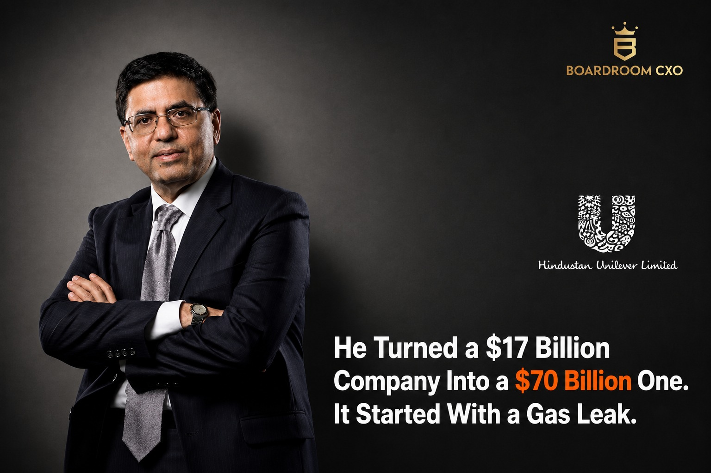

In December 1984, a gas leak at a Union Carbide plant in Bhopal killed thousands of people in one of the worst industrial disasters the world has seen. A young accountant, barely a year into his first job, sat on the crisis team that had to deal with it.
That accountant was Sanjiv Mehta. He had joined Union Carbide India in 1983. Most people carry an experience like that quietly, or try to forget it. He did the opposite. For the next four decades, in almost every important meeting he ran, he opened with the safety agenda before anything else on the table.
One disaster, early in a career, set the operating rhythm for the rest of it.
Who Is Sanjiv Mehta?
Sanjiv Mehta is a chartered accountant who spent over three decades inside the Unilever group, culminating in a decade as Chairman and CEO of Hindustan Unilever (HUL) from 2013. He joined Unilever in 1992 and, market after market, was handed the difficult ones: Bangladesh, which he turned into one of the group's best-performing businesses, then the Philippines, then North Africa and the Middle East, running operations through political instability most executives never face in a career.
In 2013, he came home to run HUL.
How Much Did HUL Grow Under Sanjiv Mehta?
Over his decade at the top, HUL's market value grew from roughly $17 billion to over $70 billion, a fivefold increase. Revenue crossed ₹50,000 crore. The company became India's largest FMCG business and Asia's largest consumer staples company. Few Indian corporate leaders have compounding numbers attached to their name at that scale.
He also closed the 2020 merger with GlaxoSmithKline Consumer Healthcare's Indian business, bringing Horlicks and Boost into HUL, one of the largest FMCG deals India has recorded.
But the number that says the most about him is quieter than any of those. Women in HUL's management rose from under 20% to 45% on his watch. That is not a headline metric investors ask about on earnings calls. It is a workforce decision made and sustained over years, which is precisely why it is a better signal of how someone actually leads than a market-cap chart is.
The Governance Habit Most Leadership Profiles Skip
Most coverage of Mehta's career reads as a business-numbers story: market cap, the GSK deal, revenue crossed. What gets left out is the mechanism behind it, the specific, repeatable habit that ran underneath four decades of leadership across four continents.
Opening every important meeting with a safety and risk review is not a mission-statement line. It is a governance discipline that forces an organization to surface bad news early, before it becomes a crisis nobody planned for. Founders and boards can adopt the ritual itself, not just admire the outcome.
The best leaders are not shaped only by their wins. They are shaped by what they refuse to forget.
Common Mistakes Boards Make With Crisis-Shaped Leaders
Boards evaluating senior candidates tend to make three errors with profiles like this one.
They treat early hardship as a liability to smooth over in interviews, rather than the source of the operating discipline that made the rest of the career work. A candidate who has run crisis response early tends to build risk visibility into every process that follows, which is exactly the instinct a growth-stage or IPO-track company needs and rarely screens for.
They evaluate leaders purely on growth numbers and skip the harder question: what specific habit or structure produced those numbers, and can it survive the leader's departure. A fivefold value increase means little to a successor who never learned the underlying discipline.
They underweight the diversity and governance metrics that took years to move, in favor of the ones that moved in a single quarter. A 20% to 45% shift in women in management is a harder, slower number to produce than a revenue line, and it says more about whether an organization was actually rebuilt or just scaled.
A Framework for Recognizing This Kind of Leadership
When boards brief us on a CXO search, we push for the same three checks on every strong candidate, regardless of function.
- Ask what discipline they installed, not just what number they hit. Growth without a named, repeatable mechanism behind it does not transfer to a new company.
- Ask what they were handed early, and what they did with it. A leader who was given the hardest markets first, and delivered, has already been stress-tested in ways an interview process cannot replicate.
- Look for one slow metric they moved on purpose. Fast numbers can be bought with budget. Slow ones, like management diversity or safety culture, require sustained intent across years.
Why This Belongs in the Boardroom, Not Just the Business Pages
A founder or board weighing a buyout offer faces a different kind of pressure than a leader inheriting a crisis, but both are tests of whether conviction can actually be executed. We wrote recently about Harsh Mariwala's decision to fight Hindustan Lever instead of selling Marico, a conviction that only worked because it was backed by leaders who owned product, brand, distribution, and ground sales at the same time. Mehta's career is the other half of that same lesson: conviction that survives four decades is built on a discipline you install and repeat, not a single bold call.
Both stories point to the same hiring problem. The market does not reward the biggest budget or the boldest slide. It rewards boards that can identify, and hire, the people who carry a discipline through decades of pressure.
Frequently Asked Questions
Who is Sanjiv Mehta?
Sanjiv Mehta is a chartered accountant who joined Union Carbide India in 1983 and later spent over three decades at Unilever, including a decade as Chairman and CEO of Hindustan Unilever from 2013. HUL's market value grew roughly fivefold under his leadership, from about $17 billion to over $70 billion.
What was Sanjiv Mehta's connection to the Bhopal gas tragedy?
He was a young accountant on Union Carbide India's crisis response team during the December 1984 Bhopal gas leak, barely a year into his career. The experience shaped a governance habit he carried for the next four decades: opening every important meeting with a review of the safety agenda.
How much did Hindustan Unilever grow under Sanjiv Mehta?
HUL's market value grew from around $17 billion to over $70 billion during his decade as Chairman and CEO, a roughly fivefold increase. Revenue crossed ₹50,000 crore, and HUL became India's largest FMCG company.
What was the GSK-HUL merger?
In 2020, HUL merged with GlaxoSmithKline Consumer Healthcare's Indian business under Mehta's leadership, bringing Horlicks and Boost into the company. It is one of the largest FMCG deals in Indian corporate history.
How did women's representation change at HUL under Sanjiv Mehta?
Women in HUL's management rose from under 20% to 45% during his tenure, a shift built over years rather than a single reporting cycle.
Looking for a leader who carries discipline, not just a resume of wins?
We screen for the mechanism behind the growth number, not just the number. Brief us on your next CXO mandate and we will tell you what the market actually has to offer.
Brief Us on a Mandate